Description
The VersionOne ClearQuest Integration (V1ClearQuest) creates defects in VersionOne based on defects in ClearQuest. Using this integration your organization can manage and triage defects reported by customers and promote them to VersionOne once you determine a fix is necessary.
Once the integraion is installed and configured, ClearQuest users can assign defects to VersionOne and they appear as Defects in the VersionOne repository. When the VersionOne defect is closed, the integration updates the ClearQuest repository to relfect this change.
The following sequence diagram illustrates how V1ClearQuest interacts with ClearQuest and VersionOne.
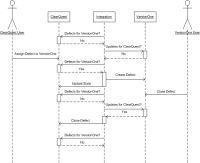
{kind=link}
System Requirements
- Operating System — Windows 2003, 2008
- Framework — Microsoft .Net 2.0 SP1
- VersionOne — Release 9.0 or above, including Team Edition
- ClearQuest — ClearQuest 7.0.1 - 7.1
Download
The latest version of V1ClearQuest is available from the VersionOne Community site
Installation
These installation instructions assume that ClearQuest is already installed, configured, and working properly.
- Determine Install Location
V1ClearQuest can be installed on any server with network access to both VersionOne and ClearQuest. Exact placement should be determined by your internal software management requirements. The integration server must meet the System Requirements stated above.
- Extract Files
Download V1ClearQuest using the link above and extract it into a folder of your choice.
- Configure
Configuration for the ClearQuest Integration is a 3 step process. - Start integration
Open up the command prompt, navigate to your installation folder, and run the following command:VersionOne.ServiceHost.exe
If you have configured your system properly, you should see several [Info] messages followed by a [Startup] message.
- Test the integration
To ensure the integration is working, perform the following steps:- Create an Defect in ClearQuest
- Set the appropriate state in order for the ClearQuest Defect to move to VersionOne
- Verify that the ClearQuest Defect appears in VersionOne as a Defect
- Close the defect in VersionOne
- Verify that the ClearQuest Defect has been updated as expected
- Shut down the service host by pressing "Q" in the console window.
- Install as a Windows Service
Run the following command from the console window:VersionOne.ServiceHost.exe --install
This command installs the service so it will will run under the account NT AUTHORITY\Local Service. Local Service must be given access privileges to the directory where the V1ClearQuest executable was installed so it can store its state and write to log files. Follow the steps below to change the security on the installation directory:
- Right click the installation folder from Windows Explorer.
- Select "properties".
- Select the "Security" tab.
- Click the "Add" button.
- Enter "Local Service" and click "OK".
- Click the "Allow" checkbox for the "Full Control" row .
- Click "OK" to save the changes.
Configuration
Configure ClearQuest
The VersionOne integration relies on States and Actions defined in the ClearQuest schema to process Defects. The ClearQuest schema allows you to customize your process model (a.k.a. workflow) for different types of change requests in the ClearQuest application. Because the schema customization is so flexible, we cannot describe every possible configuration. Therefore the instructions below describe how we customized our schema for testing. We realize that you may have different needs.
The following tables describe the States and Actions we used when testing V1ClearQuest.
ClearQuest States Used by V1ClearQuest
| State Name | Description |
|---|---|
| SubmitToVersionOne | Indicates that the Defect is waiting to be published to VersionOne |
| AssignedToVersionOne | Indicates that the Defect is available in the VersionOne applicaiton |
ClearQuest Actions Used by V1ClearQuest
| Action Name | Description |
|---|---|
| AssignToVersionOne | Action used by ClearQuest users to assign a Defect to the VersionOne system. This action puts the Defect in the SubmitToVersionOne State |
| VersionOneAccepted | Action used by V1ClearQuest after the Defect is created in VersionOne. This action puts the ClearCase Defect into the AssignedToVersionOne State |
| Close | Action used by V1ClearQuest when the VersionOne Defect is closed |
Here are the steps to configure the States and Actions defined in the tables above
- Launch ClearQuest Designer
- Checkout the existing schema you want to update
- Create a State called "SubmitToVersionOne"
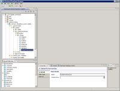 - Set the StateType to "Not_Resolved"
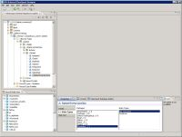 - Create a CHANGE_STATE Action called "AssignToVersionOne"
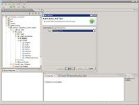 - Set the Destination State to "SubmitToVersionOne" and the SourceState to "Open" and "Submitted"
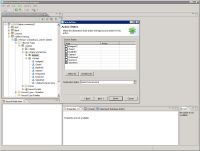 - Validate the Schema
- Create a State called "AssignedToVersionOne"
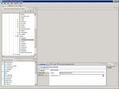 - Set the StateType to "Not_Resolved"
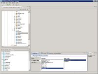 - Create a CHANGE_STATE Action called "VersionOneAccepted"
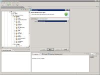 - Set the Destination State to "AssignedToVersionOne" and the SourceState to "SubmitToVersionOne"
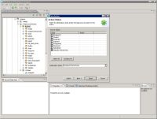 - Validate the Schema
- Modify the existing "Close" State and set "AssignedToVersionOne" as a valid SourceState
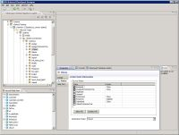 - Validate the Schema
- Commit the Schema Changes
- Upgrade existing database to the new Schema version
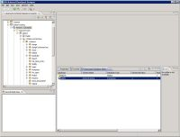
{kind=link}
{kind=link}
{kind=link}
{kind=link}
{kind=link}
{kind=link}
{kind=link}
{kind=link}
{kind=link}
{kind=link}
| In addition to States and Actions, please note any Mandatory fields in your system. In our environment, the only mandatory field when closing a defect was "Resolution". |
Configure VersionOne
| Skip this step if you are configuring a VersionOne Team Edition instance. |
- Add "ClearQuest" to the list of valid Source
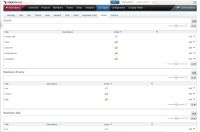 - Determine where to store the ClearQuest ID
The integration needs a text field in VersionOne to store the ClearQuest identifier. By default this is the Reference field. If you are already using this field, you'll need to create a custom text field and note the name
{kind=link}
Configure the Integration
To configure the ClearQuest integration you need to run the ServiceHost configuration tool
ServiceHostConfigTool.exe
The following section describes how to configure your ClearQuest integration using the use the configuration tool
- On the General tab specify your VersionOne connection details
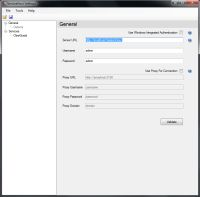
The following table describes the fields on this tabField Description Server URL This is the URL to your VersionOne server Username VersionOne user that will create defects Password Password for the specified user Use Windows Integrated Authentication Check this box if you VersionOne server is configured to use Windows Integrated Authentication If there's a proxy between this machine and the VersionOne instance, you'll also need to configure the following settings:
Field Description Use Proxy For Connection Determines if the integration tries to connect through a Proxy Proxy URL This is the URL to your Proxy Server Proxy Username The username that will get you past this proxy Proxy Password The password for the Proxy Username Proxy Domain Name of Proxy Domain - Once the VersionOne parameters are specified, press Verify button to continue.
- On the Defects tab specify the VersionOne field that will hold the ClearQuest ID
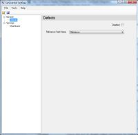
The following table describes the fields on this tabField Description Reference Field Name Defect field used to hold ClearQuest ID. By default this is the Reference field. Disabled Check this box to disable polling VersionOne for Defect updates. - On the ClearQuest tab specify your ClearQuest connection details and the Defect transfer behavior
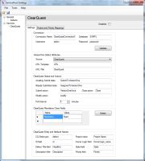- Configure the ClearQuest connection (Connection Parameters)
Field Description Disabled Check this box if you want to disable polling ClearQuest for new Defects Connection Name ClearQuest Connection Identifier Username Valid ClearQuest user for the connection specified Password Password for specified user Database Name of ClearQuest database to use on the specified connection - Click Verify to ensure the connection parameters are correct.
- Configure how Defects appear in VersionOne
Field Description Source Select the VersionOne Source to use for ClearQuest. 
VersionOne Team Edition contains a Source value of "External System" URL template Template for create a VersionOne URL to access specific ClearQuest Defect. #key# is replaced with the ClearQuest Defect ID. URL title Title to use on VersionOne Link - Configure fields that are mandatory when closing ClearQuest Defects (Mandatory Fields)
Field Description Name Name of field that is required in order to close a Defect in ClearQuest Value Valid ClearQuest value to set in specified field - Verify State Fields
These will only need to be changed if you didn't use our default field names.Field Description Awaiting Submit state ClearQuest state that indicates which Defects are ready for delivery to VersionOne Already Submitted state ClearQuest state that indicates which Defects are in the VersionOne system Submit Action ClearQuest Action to perform once a Defect is successfully created in VersionOne Close Action ClearQuest Action to perform after the VersionOne Defect is closed - Configure ClearQuest Field Names
Field Description CQ Entity type The name of the Defect entity in your ClearQuest instance ID field The name of the ClearQuest Field used to uniquely identify the entity Defect Title field The name of the ClearQuest Field containing the entity title Description field The name of the ClearQuest Field containing the entity description Project name The name of the ClearQuest Field containing the Project Name for this entity Owner Login field The name of the ClearQuest Field containing the entity owner State field The name of the ClearQuest Field containing the entity state Modify Action The name of the ClearQuest Action used to modify the entity Poll ClearQuest every Determines how frequently the integration polls ClearQuest looking for Defects.
- Configure the ClearQuest connection (Connection Parameters)
- Map your Projects Values
Project Mapping allows you to specify where Defects are created in VersionOne. The algorithm for selecting a project is as follows: First, the integration looks for the ClearQuest Project Name in the map. If it exists, the defect is created in the corresponding VersionOne Project. If the ClearQuest Project Name is not found, the integration attempts to find a VersionOne Project with the same name. If found, the integration creates the defect in the VersionOne project with a matching name. If it cannot find a VersionOne project with a name that matches the ClearQuest Project, the integration will create the defect in the root level node of the VersionOne Project tree or in the first Project in the list if there are multiple top level nodes.
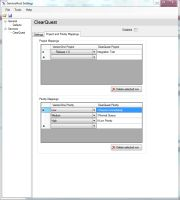
To add a Project mapping you need to do the following:- Click on the Project and Priority Mapping tab
- In the Project Mapping grid, select a VersionOne Project value from the dropdown
- Supply the corresponding ClearQuest Project name.
To remove a mapping: - Select the desired row.
- Click the Delete current row button
- Map your Priority Values
Priority mapping allows you to configure how the VersionOne Defect priority value is set based on the ClearQuest Priority value. The algorithm for mapping is simple, if the ClearQuest Priority value is in the mapping, the VersionOne defect value is set to the mapped value. If the ClearQuest Priority value is not found, the VersionOne defect value is not set.
To add a Priority mapping you need to do the following:- Click on the Project and Priority Mapping tab
- In the Priority Mappings grid, select a VersionOne Priority value from the dropdown
- Supply the corresponding ClearQuest Project value name.
To remove a mapping: - Select the desired row.
- Click the Delete current row button
- Save your changes and exit the program
{kind=link}
{kind=link}
{kind=link}
{kind=link}
Technical Details
VersionOne.ServiceHost.exe.config
VersionOne.ServiceHost.exe.config is the file that controls the behavior of VersionOne.ServiceHost.exe. Values in this file are set by the configuration tool (ServiceHostConfigTool.exe). This section is provided for informational use only. Users are discouraged from editing this file directly.
The ClearQuestService Element controls how the integration communicates with ClearQuest. The following table describes the elements nested under ClearQuestService.
| Element Name | Description |
|---|---|
| ClearQuestConnectionName | Name of ClearQuest connection to use |
| ClearQuestUsername | Valid user for the connection specified |
| ClearQuestPassword | Valid password for the Username specified |
| ClearQuestDatabase | Database instance on the specified connection |
| SourceFieldValue | The value to set in the VersionOne Source field. This must be a valid VersionOne Source |
| ClearQuestWebUrlTemplate | Template used for creating a VersionOne link to the ClearQuest defect |
| ClearQuestWebUrlTitle | Title on the VersionOne link |
| ClearQuestMandatoryFields | This element is used to specify ClearQuest Mandatory fields and the values to use when populating these fields |
| ClearQuestWaitedSubmitToV1State | ClearQuest State that indicates which Defects are ready for delivery to VersionOne |
| ClearQuestSubmitedToV1Action | ClearQuest Action to perform once a Defect is successfully created in VersionOne |
| ClearQuestSubmitedToV1State | ClearQuest State that indicates which Defects are in the VersionOne system |
| ClearQuestCloseAction | ClearQuest Action to perform when a Defect is closed in VersionOne |
The following configuration parameters describe the ClearQuest entity used by the integration. Each of these elements is also a child of the ClearQuestService element.
| Element Name | Description | Value in our test instance |
|---|---|---|
| ClearQuestEntityType | The name of the Defect entity in your ClearQuest instance | defect |
| ClearQuestIDField | The name of the ClearQuest Field used to uniquely identify the entity | id |
| ClearQuestDefectTitleField | The name of the ClearQuest Field containing the entity title | Headline |
| ClearQuestDescriptionField | The name of the ClearQuest Field containing the entity description | Description |
| ClearQuestProjectNameField | The name of the ClearQuest Field containing the Project Name for this entity | Project.Name |
| ClearQuestOwnerLoginField | The name of the ClearQuest Field containing the entity owner | Owner.login_name |
| ClearQuestStateField | The name of the ClearQuest Field containing the entity state | State |
| ClearQuestModifyAction | The name of the ClearQuest Action used to modify the entity | modify |
The DefectWriterService element controls how defects are created in VersionOne. The following table describes the elements nested under DefectWriterService.
| Element Name | Description |
|---|---|
| ExternalIdFieldName | Name of VersionOne field that holds the ID of the ClearQuest Defect. Must be a text field |
| Settings | |
| Element Name | Description |
| ApplicationUrl | VersionOne Application URL |
| Username | Valid VersionOne Username. This user must have authority to create defects in the VersionOne projects being processed. |
| Password | Password for specified user |
| APIVersion | The minimum application version required for this hosted service. |
| IntegratedAuth | False if using VersionOne native security, true is using Windows Integrated Security. If VersionOne is configured to use Windows Integrated Security, the account the service is running as must be a configured VersionOne user with a project role of Team Member or higher. Also, Username and Password should be empty if IntegratedAuth is true. |
The TimePublisherService element controls the ClearQuest poll frequency. The following table describes the elements nested under TimePublisherService.
| Element Name | Description |
|---|---|
| Interval | Number of milliseconds to wait between polls to the ClearQuest system |
| PublishClass | Do Not Change |
The DefectWriterServiceTimer element controls the VersionOne poll frequency. The following table describes the elements nested under DefectWriterServiceTimer.
| Element Name | Description |
|---|---|
| Interval | Number of milliseconds to wait between polls to the VersionOne system |
| PublishClass | Do Not Change |